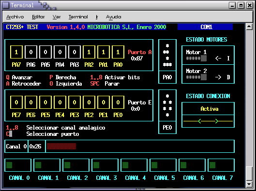
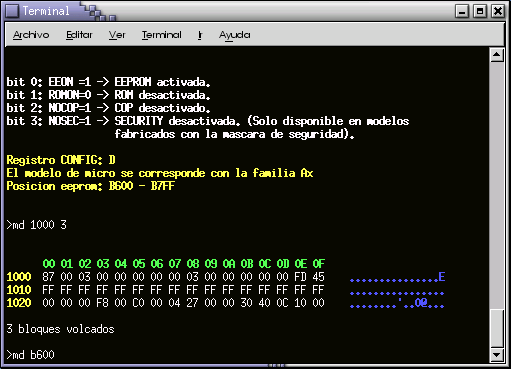
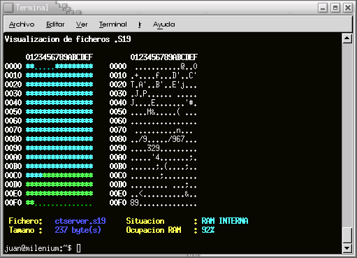

|
CTTOOLS: Herramientras para la tarjeta CT6811 |
INTRODUCCIÓN
Las CTTOOLS
son herramientas básicas de trabajo para la tarjeta
CT6811 de Microbótica.
Se trata de pequeños programas para la consola que permiten
cargar programas en la RAM interna, grabar la EEPROM, manejar la
tarjeta CT293+, manejar ficheros .S19, etc... Todas las
CTTOOLS se basan en la librería
CTS
Los programas que componen las
CTTOOLS se listan a continuación. Haga click para
acceder a su página man:
ctdetect: Detectar el puerto en el que se encuentra conectada la tarjeta CT6811
ctreset: Hacer un reset de la CT6811, saltar a la EEPROM o a la RAM interna
ctmap: visualziar el mapa de memoria de un fichero .S19
downmcu: Cargar un programa en la RAM interna de la CT6811. Micros A0, A1 y E2
downmcu_e: Versión del downmcu para micros E9
mcboot: Terminal de comunicaciones para la CT6811
ctdialog: Dialogar con la tarjeta CT6811
ct294: Control de la tarjeta CT293+ y del microbot Tritt
ctload: Carga de programas en la RAM interna y EXTERNA
cts19toc: Convertir un fichero .S19 para la RAM interna en una matriz en C. Esta utilidad sólo la utilizan los desarrolladores
Aquí se
muestran algunas capturas de pantalla:

Programa CT294, para el control del microbot Tritt

Programa ctdialog

Programa ctmap
AUTORES:
Juan González Gómez (a.k.a. Obijuan), (Microbótica, 1999)
Andrés Prieto-Moreno Torres, (Microbótica, 1999)
LICENCIA: GPL
PLATAFORMA: Linux
DOWNLOAD:
|
FICHEROS PARA DESCARGAR |
|
CTTOOLS. Version 1.5. Fuentes |
|
|
CTTOOLS. 1.5 Binarios. Versión para Debian/Sarge |
|
|
CTTOOLS. 1.5. Fuentes para Debian/Sarge (Desarrolladores) |
|
|
Cttools Versión 1.4. Fuentes y ejecutables |
|
|
Cttools Versión 1.4. Ejecutables |
NOTICIAS
28/Marzo/2005: Documentación de las CTTOOLS pasadas a XHMTL 1.0. Autor: José Jaime Ariza, Universidad de Málaga. ¡Muchas gracias!
5/Julio/2004: Versión 1.5 de las CTTOOLS.
Dependen de la librería cts 1.5
Añadidos paquetes para Debian/Sarge
Estas herramientas ya no se van a mantener más. La tarjeta CT6811 ha quedado obsoleta. Ahora utilizamos la Tarjeta Skypic.
16/Agosto/2002: Versión 1.4 de las CTTOOLS puesta en esta web